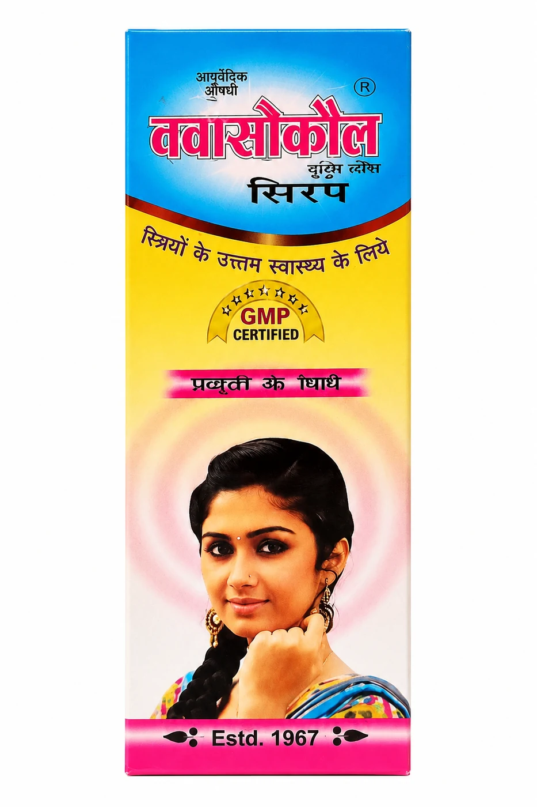
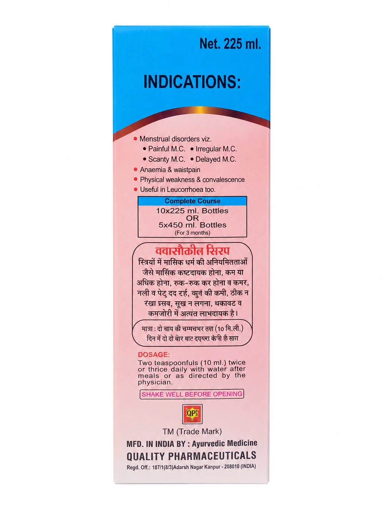
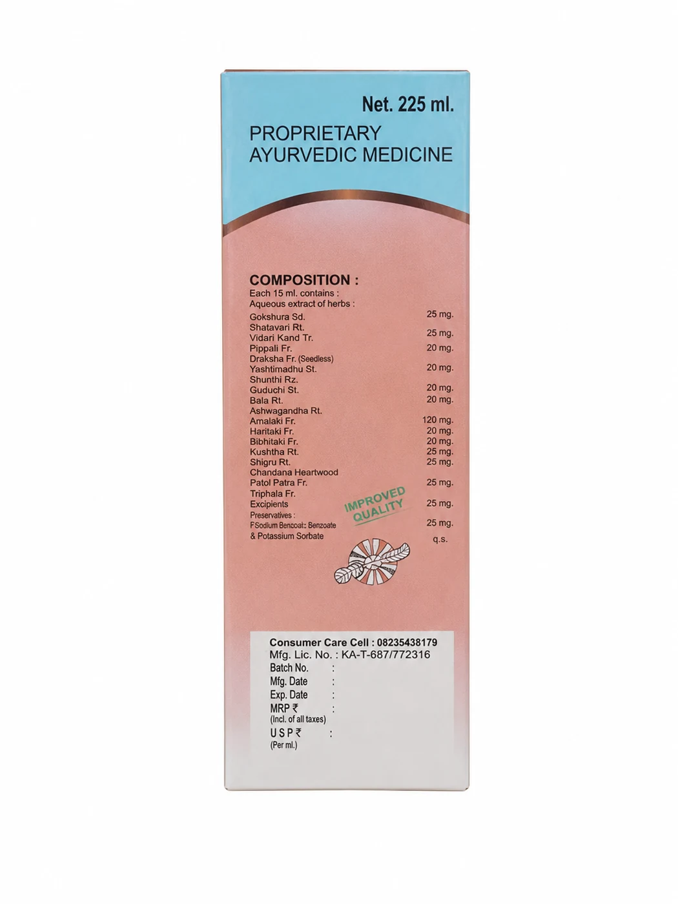

Suitable forLadies only




Women's Wellness
QuasoCOL
This proprietary Ayurvedic medicine is a comprehensive herbal formula primarily indicated for addressing menstrual disorders, including painful, irregular, or delayed cycles. Enriched with a potent blend of traditional ingredients such as Ashoka Bark, Kala Jeera, and Arjuna Bark, the syrup is formulated to alleviate physical weakness, anemia, and pelvic pain. Designed for Improved Quality, this health tonic serves as a restorative supplement to support reproductive health and overall vitality.
Suggested doseTwo teaspoons (10 mL) twice or three times daily with water.
Packing & MRP
| Pack | MRP |
|---|---|
| 225ML | ₹140 |
| 450ML | ₹240 |
Availability and pack selection can be confirmed with our team.
Product information
Indications & expected results
Presented consistently from the available product literature.
Indications
- Painful, irregular, scanty, or delayed menstrual cyclesदर्दनाक, अनियमित, कम या देर से आने वाला मासिक धर्म
- Anaemia and waist painएनीमिया और कमर दर्द
- Leucorrhoeaश्वेत प्रदर
- Physical weaknessशारीरिक कमजोरी
- Convalescence supportस्वास्थ्य लाभ में मदद
Results
- Helps regulate the menstrual cycle and improve flow
- Supports reproductive health
- Reduces menstrual pain and vaginal discharge
- Supports haemoglobin improvement and reduced weakness
Product information is provided for awareness and enquiry. Use as directed on the label or by a qualified healthcare professional.
Ayurvedic formulation
Ingredients
Ingredient names and botanical details where available.

Ashoka Bark (Saraca asoca)
Ashoka bark is a highly valued Ayurvedic ingredient traditionally used to support women's wellness and reproductive health. It may help promote hormonal balance, comfort, and overall vitality.

Kala Jeera Seed (Bunium persicum)
Kala Jeera seeds are traditionally used in Ayurveda for their digestive and wellness-supporting properties. They may help support digestion, metabolism, and overall body balance.

Daru Haldi Rhizome (Berberis aristata)
Daru Haldi rhizome is known in Ayurveda for its cleansing and anti-inflammatory properties. It may help support skin health, digestion, immunity, and overall wellness.

Lal Chandan (Pterocarpus santalinus)
Lal Chandan powder, also known as Red Sandalwood, is valued for its cooling and soothing properties. It may help support skin wellness, relaxation, and overall natural balance.

Chansoor Seed (Lepidium sativum)
Chansoor seeds are rich in nutrients and traditionally used in Ayurveda to support strength, digestion, and overall wellness. They may also help promote energy and nourishment.

Konch Seed (Mucuna pruriens)
Konch seeds, also known as Mucuna Pruriens, are valued in Ayurveda for supporting strength, stamina, nervous system health, and overall vitality.

Arjuna Bark (Terminalia arjuna)
Arjuna bark is a respected Ayurvedic ingredient traditionally used to support heart health and circulation. It may help promote cardiovascular wellness, stamina, and overall vitality.

Punarnava Root (Boerhavia diffusa)
Punarnava root is widely used in Ayurveda for its rejuvenating and cleansing properties. It may help support kidney health, digestion, fluid balance, and overall body wellness.

Palash Flowers (Butea monosperma)
Palash flowers are traditionally used in Ayurveda for their cleansing and wellness-supporting properties. They may help support digestion, skin wellness, and overall natural health.
Continue exploring